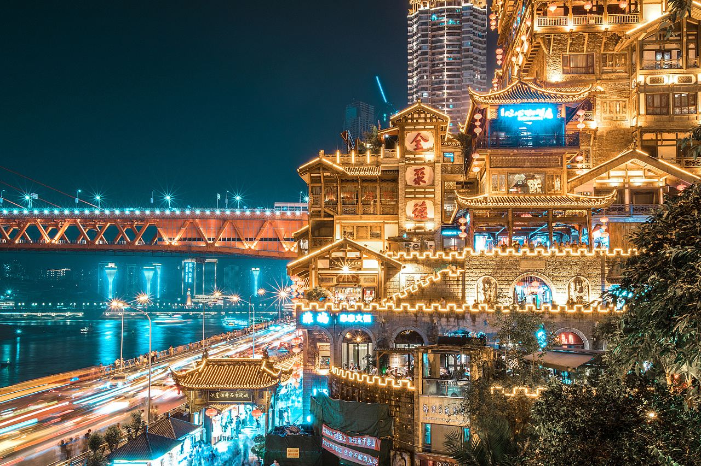

<
>
重庆市是中国四个直辖市之一，位于西南地区。它下辖26个市辖区、8个县和4个自治县，总共38个县级行政单位。
这些行政单位包括渝中区、大渡口区、江北区、沙坪坝区、九龙坡区、南岸区、北碚区、渝北区、巴南区等市辖区，以及江津区、合川区、永川区、璧山区、荣昌区、大足区、铜梁区、潼南区等县和自治县。
此外，重庆还设有两江新区、重庆高新区、重庆市万盛经济技术开发区、重庆市双桥经济技术开发区等特殊功能区。